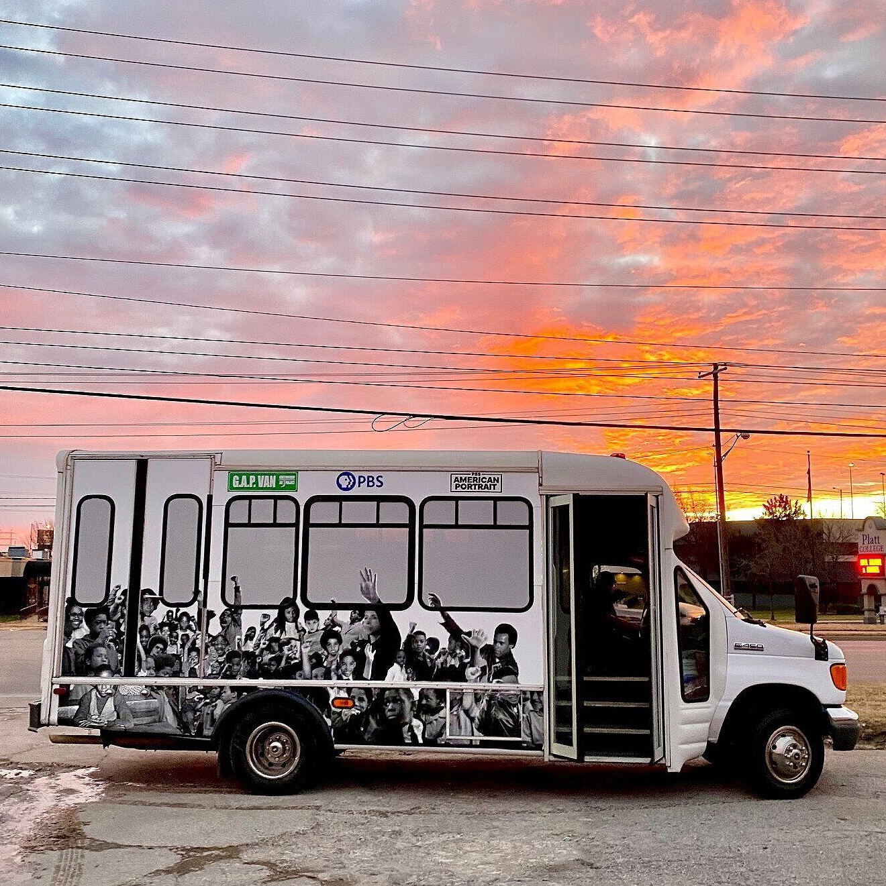

Born in Eufaula, Alabama
Growing up on a sharecropping farm.
Columbus College, GA
Artist in residence at Springer Art Center, Biloxi, MS
Solo exhibition at Biloxi Cultural Center, Biloxi, MS
Moves to Houston, Texas
Commerce Street Artists Warehouse CSAW (1985-2010), a communuty based artists Lowe cofound with Lee Benner, Deborah Moore, Wes Hicks, Kevin Cunningham, and Robert Campbell

Contemporary Arts Museum, Houston, TX
The First Texas Triennial (September 24-November 13, 1988)
 Installation about a 1982 Ku Kux Klan lynching
Installation about a 1982 Ku Kux Klan lynching
Co-found the Union of Independent Artists

S.H.A.P.E. Protest Installation
After the 1989 shooting death of Ida Delaney at the hands of a drunk, off-duty police officer, Rick Lowe presented an exhibition in the playground of the S.H.A.P.E. Community Center as part of his Victims series. The exhibition featured life-size figures of painted plywood representing those killed by violence installed in a large-scale tableau.

Phoenix Triennial: Contemporary Identities: 23 Artists., Phoenix Art Museum, Phoenix, AZ
August 21-October 10, 1993

.png)
Project Row Houses
Project Row Houses’ work with the Third Ward community began in 1993 when seven visionary African-American artists—James Bettison (1958-1997), Bert Long, Jr. (1940-2013), Jesse Lott, Rick Lowe, Floyd Newsum, Bert Samples, and George Smith—recognized real potential in a block and a half of derelict shotgun houses at the corner of Holman and Live Oak. Where others saw poverty, these artists saw a future site for positive, creative, and transformative experiences in the Third Ward. Together they began to explore how they could be a resource to the community and how art could be an engine for social transformation. This is how the PRH story began.
As the founders engaged with a community of creative thinkers and the neighbors around them, Project Row Houses quickly began to shift the understanding of art from traditional studio practice to a more conceptual base of transforming the social environment. While they were artists, they were also advocates.
Over the next twenty-seven years the organization brought together groups and pooled resources to materialize sustainable opportunities for artists, young mothers, small businesses, and Third Ward Residents helping to cultivate independent change agents by supporting people and their ideas so that they have tools and capacity to do the same for others.

Watts House Projects
Lowe conceptualized Watts House Project in 1996. He had been invited to replicate Project Row Houses in Los Angeles and decided to focus on the neglected post-industrial community around the iconic Watts Towers. Edgar Arceneaux, then an art student, worked with Lowe on community organizing efforts and the creation of a strategic plan.
Uncommon Sense, Museum of Contemporary Art (MOCA)
Los Angeles - 19 March - 6 July, 1997
.jpg)
Silver Medal by the Rudy Bruner Awards in Urban Excellence (jointly with Project Row Houses)
Nasher XChange: Trans.lation
Rick Lowe’s Nasher XChange project took place in the Vickery Meadow neighborhood, a three-square-mile area that makes up one of the most culturally diverse sections of Dallas. Dubbed Dallas’ own “United Nations,” Vickery Meadow is home to 30,000 residents speaking as many as 27 languages from countries in Africa, Asia, the Middle East and Latin America. The project, entitled Trans.lation, facilitated a new vision of what public space and interaction can look like in Vickery Meadow.
MacArthur Fellowship
Harvard GSD 2015 Class Day Lecture
Documenta 14, Athens, Greece
Victoria Square Project

New Paintings & Drawings: Rick Lowe
Art League Houston, Texas Artist of the year

Greenwood Art Project: 1921 Tulsa Massacre Centennial
The goal of the Greenwood Art Project is to be a catalyst for uniting the city of Tulsa by working with artists, residents, leaders, organizations, and businesses to elevate awareness of Greenwood’s history, focusing on the 1921 Tulsa Massacre and the once thriving Black Wall Street.
Lead artists: William Cordova and Rick Lowe
{kind=link}
Gagosian New York City: Social Works, curated by Antwaum Sargent
Group show including: David Adjaye, Zalika Azim, Allana Clarke, Kenturah Davis, Theaster Gates, Linda Goode Bryant, Lauren Halsey, Titus Kaphar, Rick Lowe, Christie Neptune, Alexandria Smith and Carrie Mae Weems.

Toward Common Cause: Art, Social Change, and the MacArthur Fellows Program at 40.
The Smart Museum’s MacArthur Fellows Program 40th Anniversary Exhibition Curator, Abigail Winograd, asked Lowe, MacArthur Fellow Class of 2014, to create a new project based in Chicago. Black Wall Street Journey, a project inspired by his work in Tulsa around the 100th anniversary of the Tulsa Massacre, seeks to develop a roadmap for assessing and enriching disenfranchised communities.